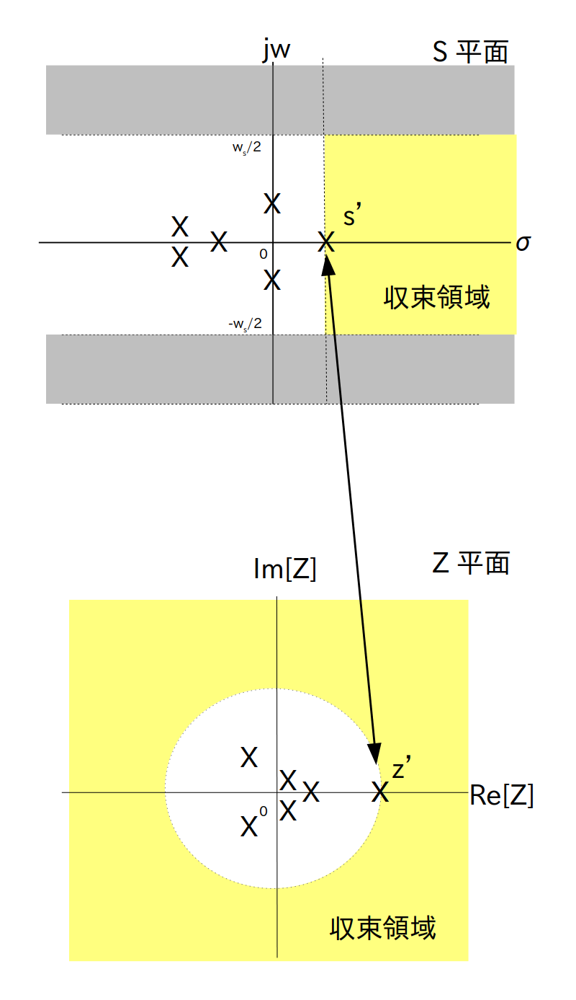

バッテンはラプラス変換の極の位置を表す

Z変換 $\textrm{F}(z)$ は全ての $z$ において収束するとは限らないので必ず収束領域を考える必要があります。
例4の様に$f[i]$ の式があらかじめ分かっていれば $\textrm{F}(z)$ の式を求める途中で収束領域が分かるのですが、$f[i]$ の式は分からないけど $\textrm{F}(z)$ の式は分かるという状況もよく有ります(例えば線形フィルタを設計する時など)。
この場合は $\textrm{F}(z)$ の式から収束領域を求める必要がありますが、前ページで説明したように Z 変換はラプラス変換と同一視出来ますので、Z 変換の収束領域もラプラス変換と同様に極の位置から求めることが出来ます。
さてラプラス変換では、S 平面の縦軸を $jw$、横軸を$\sigma$ とすると、極の中で一番右側にある(つまり実数部が一番大きい)極の右側が収束領域になっていました(図1の黄色の部分)。
なお実数部が一番大きい極を図1の様に $s'= \sigma' + j \cdot w' $ としています。
この $s'$ の実数部 $\sigma'$ のことを「収束座標」と呼び、収束領域は $\sigma > \sigma'$ で表されます。
バッテンはラプラス変換の極の位置を表す
さてラプラス変換の各極に対応する Z 平面上の点もやはり Z 変換の極になります。
そこで $s'$ に対応する Z 平面上の点を $z'$ とすると、$z'$ の絶対値は
で表されますので、図 2 および図 3 より
(1) S 平面上で $s'$ よりも左側の領域内にある点は Z 平面上では半径 $|z'|$ の円の内側の領域内にある点になる
(2) S 平面上で $s'$ と同じ実数部を持つ点は Z 平面上では半径 $|z'|$ の円上の点になる
(3) S 平面上で $s'$ よりも右側の領域(つまり収束領域)内にある点は Z 平面上では半径 $|z'|$ の円の外側の領域内にある点になる
ということが分かります。
また(1)(2)より、
「 Z 変換の $z'$ 以外の極は半径 $|z'|$ の円の内側の領域内にある」
という事も分かります。
さらに(3)より
「Z 変換の収束領域は Z 平面上では半径 $|z'|$ の円の外側の領域になる」
という事も分かります。
サンプリング間隔 $\tau$ は 0 より大きい実数なので $\sigma$ が大きくなると $|z|$ も大きくなる

バッテンはラプラス変換およびZ変換の極の位置を表す
まとめると次のことが言えます。
z 変換 $\textrm{F}(z)$ の極の中で一番絶対値が大きい極を $z'$ とする。
z 変換の収束領域は Z 平面上の半径 $|z'|$ の円の外側の領域(ただし円上の点は含まず)である (図3の下の図を参照)。
例えば例4では
\begin{align*} \textrm{F}(z) = \frac{1}{1-a \cdot z^{-1}} \end{align*}
でしたが、極は $1-a \cdot z'^{-1} = 0$ を解いて $z'=a$ となります。
よって $|z'| = |a|$ なので、収束領域は半径 |a| の円の外側になりますが、例4の図1を見ると確かにそうなっていることが分かります。
{kind=link}